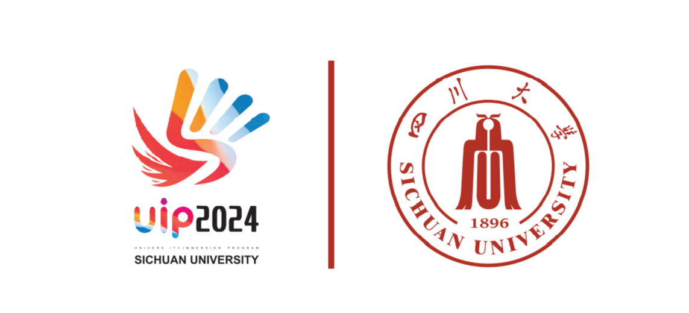

学院通知 · 教学通知
【国际课程周项目发布】国际处特邀国际组织专家开设国际组织和国际胜任力培养系列讲座
发布时间：2024-06-14
INTRODUCTION TO INTERNATIONAL ORGANIZATIONS & INTERCULTURAL COMPETENCIES 国际组织和国际胜任力 Tuesdays and Thursdays, 10:00am – 11:30 am （ July 2, 4, 9 and 11 ） Venue: Wangjiang Campus (classroom to be determined) 上课时间：7月2日、4日、9日和11日（周二、周四）上午10:00-11:30 上课地点：望江校区（教室待定） Speaker: Eleanor Bedford, Expert at multiple international organizations Facilitator: Kui Zhu, Senior Program Director, International Affairs Office, Sichuan University 授课人：Eleanor Bedford（国际组织专家） 主持人：朱葵（四川大学国际处高级项目主任） This cour se provides students with a strong understanding of international organizations and the related competencies and skills required to navigate complex, cross-cultural work and study environments. Students will learn about classroom expectations and different pedagolocial approaches in students centered classrooms. They will be introduced to theories, tools, and techniques that will develop their cross culture skills and their self-awareness, including Adaptive Leadership, Complexity Theory, and Cultural Dimensions to work in international organizations or study or live in different cultures effectively. The course includes brief lectures, in-class exercises, real world scenarios, and discussion in small groups and plenary. Students also have opportunities to ask questions of current or former staff at the World Bank and various United Nations agencies through collecting questions at end of one class and get answers at the next class. 本课程为学生提供对国际组织的深刻理解，以及驾驭复杂的跨文化工作和学习环境所需的相关胜任力和技能。学生将了解以学生为中心的课堂和不同的教学方法。他们将学习理论、工具和技能，以发展他们的跨文化技能和自我意识，包括适应性领导力、复杂性理论和文化维度，以便在国际组织中工作，或在不同的文化中有效学习和生活。该课程包括提纲挈领的讲座、课堂练习、真实世界场景研究以及小组和全体的讨论。学生们还有机会向世界银行和联合国各大机构的前任或现任员工提问，在下一次课得到这些员工的回复。 Eleanor Bedford is an international organization development specialist with more than 30 years of experience in international, bilateral, and multilateral organizations, including Doctors Without Borders, the World Bank, and the United Nations High Commissioner for Refugees (UNHCR.), etc.. As an expert in international and intercultural competencies, Ms. Bedford has led programs, trainings, assessments, and evaluations in Africa, Asia, Europe and the Middle East. She has taught as adjunct faculty at American University’s School of International Service and simultaneously delivered large-scale system facilitation, dynamic strategic planning, coaching, and organizational development initiatives across 5 continents. She is a graduate of the University of Virginia and Johns Hopkins University majoring in International Studies. Eleanor Bedford女士是一位国际组织发展专家，在国际、双边和多边组织中拥有超过30年的经验，包括无国界医生、世界银行、联合国难民事务高级专员办事处（UNHCR）等。作为国际组织和国际胜任力方面的专家，Eleanor曾领导非洲、亚洲、欧洲和中东的项目、培训和评估。她曾在美利坚大学国际服务学院担任教师，还在五大洲提供大规模的系统培训、动态战略规划、教练法和组织发展计划。她毕业于弗吉尼亚大学和约翰霍普金斯大学国际关系学院。 Students Register Criteria学生报名条件: Essential condition必备条件 ： Good English to participate interactive lectures and classroom activities 良好的英语交流能力，能适应互动式教学和课堂活动。 Commitment to attend the four training classes. 因四次讲座内容层层递进，报名的同学默认将参加四次讲座课程。 Optional condition选择条件： Who have interest to learn or work for international organizations对国际组织工作感兴趣的同学。 Who will or have attended for Global Vision program especially the Cambridge International Organization Program 将要参加或已参加过“大川视界”寒暑假访学项目，尤其是剑桥国际组织项目的同学。 Who are considering further education in different cultures有志于出国深造、在不同文化中学习和工作的同学。 Registration报名方式: Scan the QR code to register before June21. Classroom information with be provided in the group later. 6月21日前扫码报名。望江上课地点会在建群后另行通知。 报名咨询电话： 85401551 国际合作与交流处 2024年6月14日
